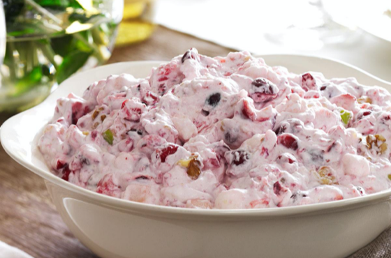

Salads
Ingredients
- 2 pkgs cranberries, raw and whole
- 1 can pineapple in heavy syrup
- ½ cup sugar
- 1 pkg miniature marshmallows
- 1 cup pecans, chopped (add more if desired)
- 1 Cool Whip (large container)
Directions
- Wash and grind cranberries. Add sugar and leave overnight or as long as possible if you forget to do it the night before. They need to soak up the sugar so they won't be so tart.
- In the morning, add pineapple, pecans (or walnuts), about half the marshmallows and as much Cool Whip as you think it needs
Submitted by Stephen Rose
My grandmother would make this salad every Thanksgiving and Christmas to go with the turkey and stuffing. It is so good...I even ate it as dessert.